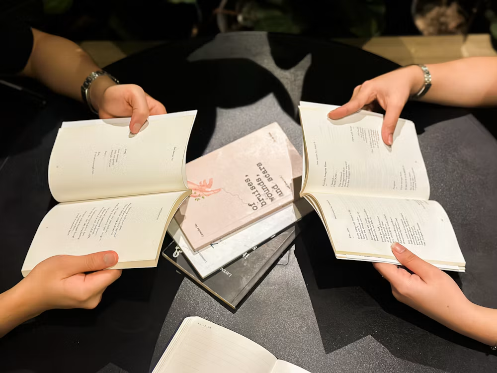

W@niPoem
Discover beautiful poems, share your own verses, and get kind feedback from a community that loves words. Build a daily reading habit, grow your writing, and make friends along the way. Start for free today.

"I never thought my words were good enough to share. For years I kept my poems hidden in old notebooks, afraid that no one would understand them. Then I found W@niPoem, a place where every verse is welcome and every writer is encouraged. I wrote my first poem here. Now I write one every week, and each poem reminds me that my voice matters."
Create your free account and share your first poem in minutes.